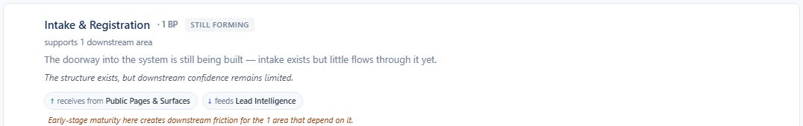
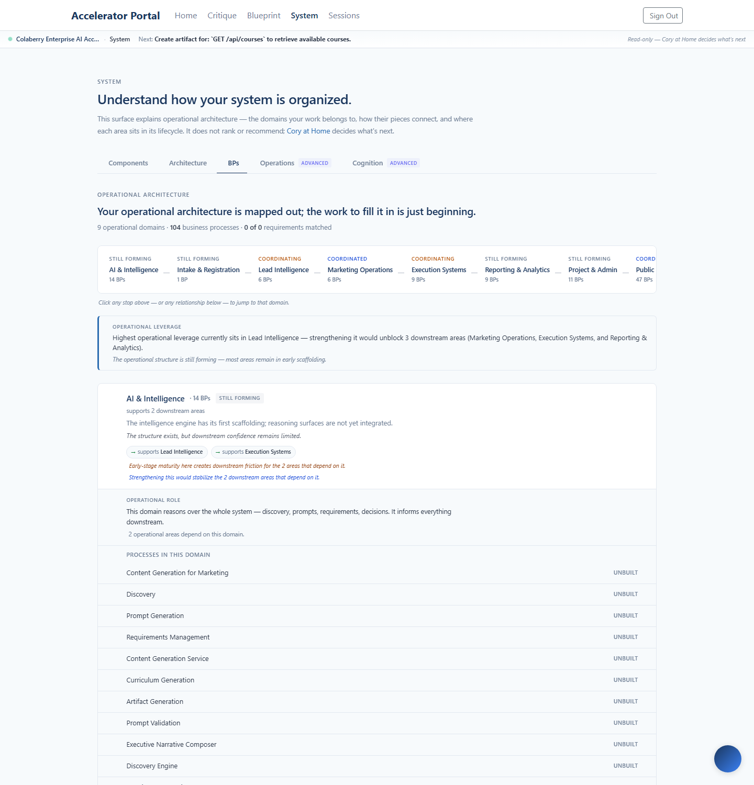
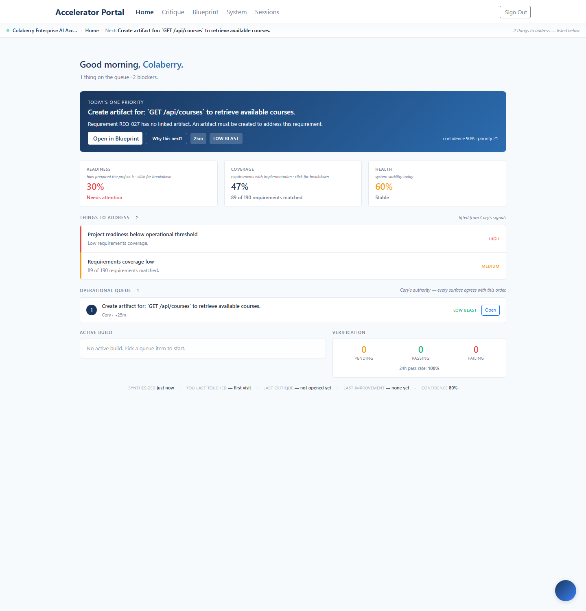

Shipped 2026-05-15 to enterprise.colaberry.ai
(commit 3b74bd1). Operator feedback after the structural
confidence sprint: the workspace had become calm and editorial, but
the operator still had to click each domain row to see completion
and downstream count. This sprint surfaces those two signals at the
scan layer — without adding a single new computation, dashboard, or
color.
The operator no longer has to expand a row to know how complete a domain is or how many areas it influences downstream. Both signals sit in the row header, in a calm muted line directly below the title row.

Note: this domain has no requirements extracted yet, so the completion item is correctly absent — the strip stays silent rather than rendering "0% complete" or a "—" placeholder. Honest no-signal silence was the operator's confirmed preference.
totalRequirements > 0; silent otherwise.downstreamCount > 0; silent otherwise.The metadata strip's real value shows up when the eye drops down the stack. Each row carries the same two-item structure in the same slot, so the operator can scan completion + downstream horizontally across domains without reading sentences.

The full row layering, top to bottom, now reads:
| Layer | Content | Weight |
|---|---|---|
| 1. Title row | Icon · Label · BP count · trust badge · momentum chip (when moving) | Primary |
| 2. Scan-speed metadata (new) | "X% complete · supports N downstream areas" | Primary scan |
| 3. Narrative | One editorial sentence about what the area is doing operationally | Secondary |
| 4. Confidence line (italic) | "X is operationally dependable." / etc. | Secondary tone |
| 5. Relationship chips | Clickable navigation between domains | Interactive |
| 6. Pressure + forward notes | Backward/forward operational reading (amber + blue) | Tertiary |
The line between "useful metadata" and "KPI dashboard" is composition, not content. Same two strings rendered with bold numbers, colored percentages, and progress bars would feel like a control panel. The constraints below are what kept them feeling editorial.
| Could have done | Did instead | Why |
|---|---|---|
| Bold percentage | Weight 400, same as the rest of the line | Bold pulls the eye; weight 400 lets the strip read as prose |
| Colored percentage (red < 50%, green > 75%) | Single muted color (--color-text-light) | Color encodes evaluation; muted = observation only |
| Progress bar visualization | Number only | A bar is a chart; a number is metadata |
| Icons next to each item (📊 47%) | No icons | Icons next to numbers always feel like a dashboard KPI |
| Show "0% complete" when nothing is matched | Silent when no requirements exist | "0%" reads as a verdict; silence is honest about no signal |
| 3+ items (add usable count, mode, etc.) | 2-item cap, enforced by the util's design | Anything more becomes a tag row, not a sentence fragment |
| Proportional digits (47% jitters as it grows) | font-variant-numeric: tabular-nums | Tabular digits keep the strip from twitching on data updates |
This sprint only touches BPDomainSurfaceRows. Cory Home should be byte-identical to last sprint's structural-confidence build — same restrained tiles, same OperatorFocusCard, same OperationalHistoryStrip. Verified.

Quick sweep for places where the editorial layers go vague enough to hide useful signal. The audit kept this sprint scoped — no changes are demanded by the findings below, they're documented as deliberate.
| Surface | Audit finding | Action |
|---|---|---|
| Domain row's existing forward leverage note ("Strengthening this would stabilize 2 downstream areas") | Names downstream count too — overlaps the new "supports 2 downstream areas" metadata. | Kept as complementary framing — metadata is a fragment; the note is conditional prose. |
| Expanded view's "operational role" block ("2 operational areas depend on this domain") | Also names downstream count. | Kept — that block is only visible when expanded; the scan-speed strip serves the collapsed reader. |
| BP-line word ("UNBUILT", "EARLY", "FORMING", "USABLE") | Only visible in expanded view. | Kept — that's BP-level signal, not domain-level. Surfacing it at the row header would conflate scales. |
| Cory Home tiles (28px → 22px from last sprint) | No scan-speed metadata under each tile. | Out of scope — sprint-12 may revisit Home composition if the operator finds the same gap there. |
Net stats: 3 files (1 new util + 1 new test + 1 modified component), 242 tests passing (13 new). Single commit, no follow-up needed. No backend changes, no new endpoints, no computation added. Pure surfacing of existing classifier output.
The line not crossed: the operator now scans faster but the surface still reads as editorial. No progress bars. No colored percentages. No icons next to numbers. No status pills. The metadata strip would not survive an audit five sprints from now if any of those crept in — keeping the constraint enforced via the util's design.